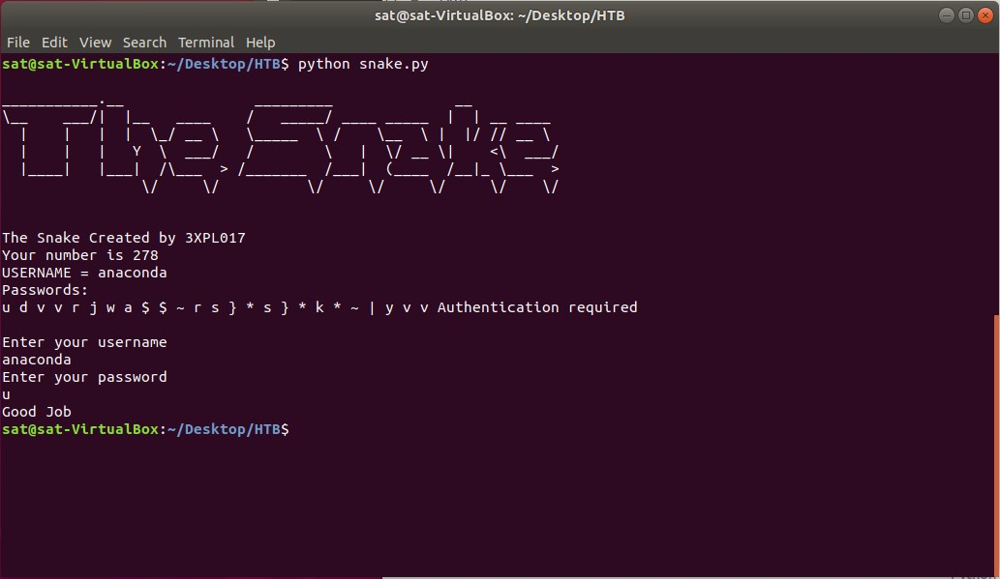
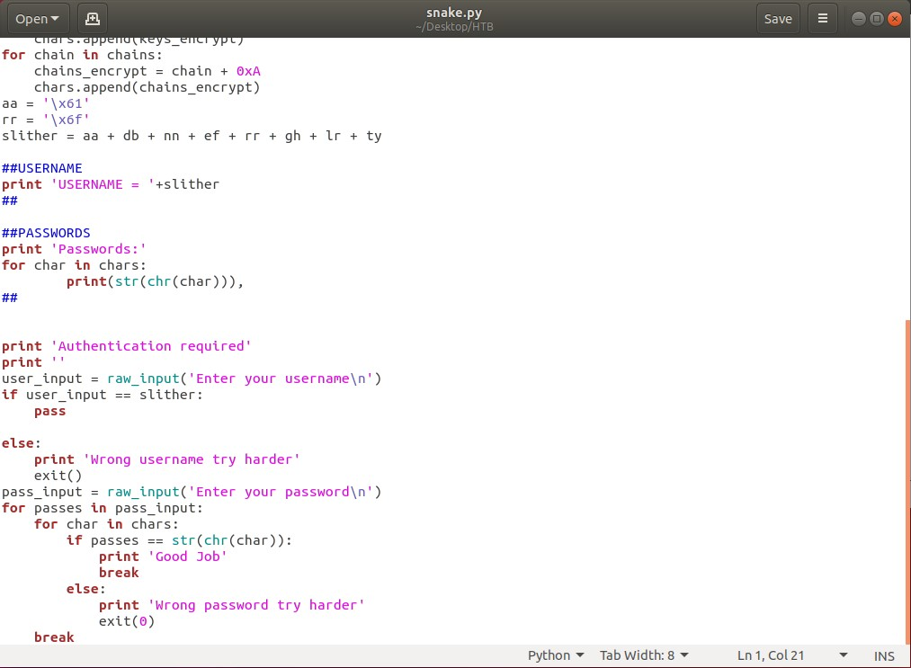
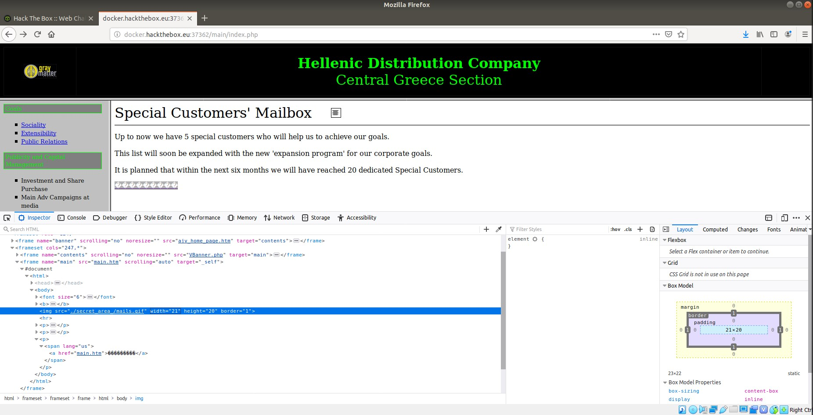
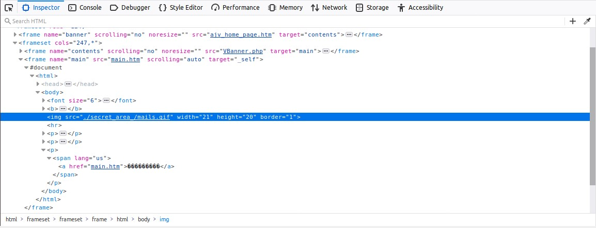
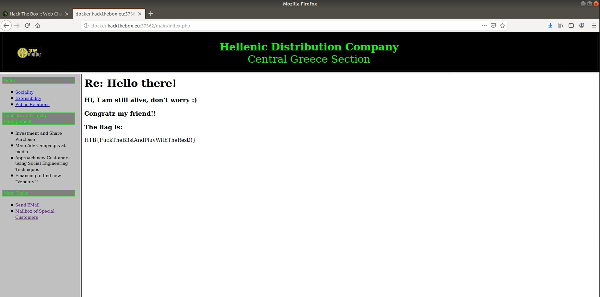
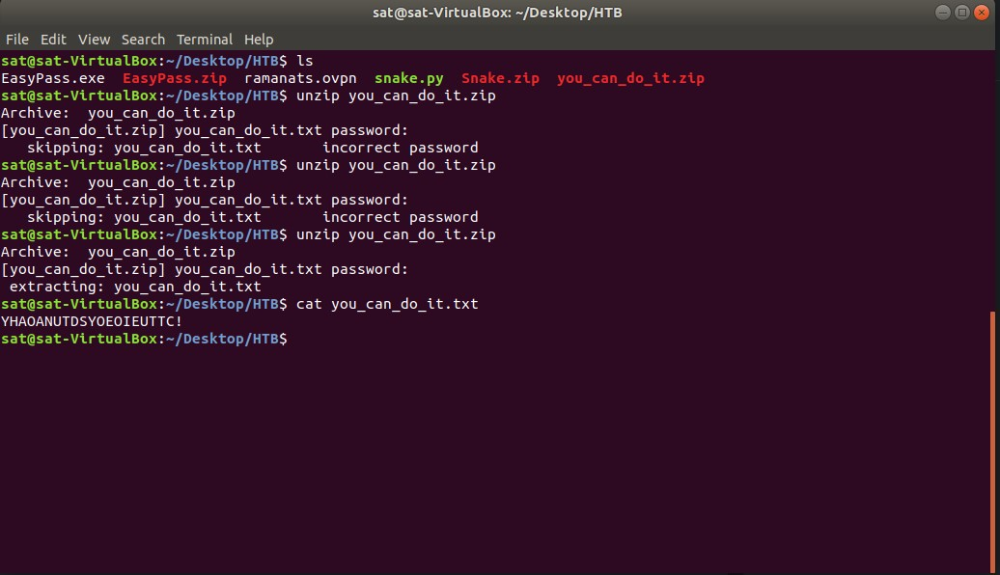
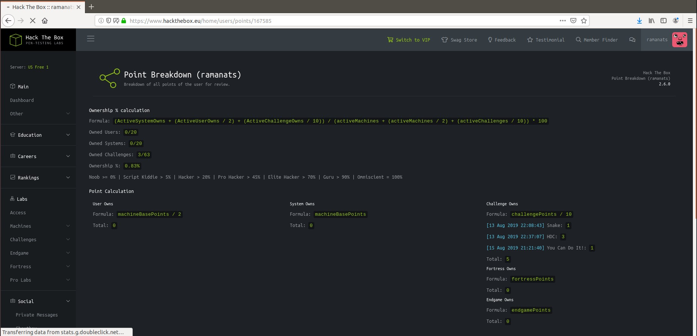
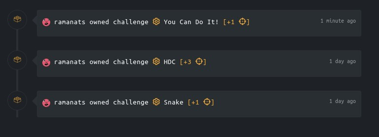

Hack The Box is a website designed for "hackers" to sharpen their penetration testing skills through challenges. To start using the platform, all users are required to find the invite code. This blog will talk about how I obtained the code and completed some of the challenges. To start off, I downloaded Oracle’s VM VirtualBox and installed a Linux flavored OS – Ubuntu. In the vm, I then went to the “Hack the Box” website and worked on getting the invite code. I first right-clicked on the invitation screen and selected “Inspect”. I opened the console tab and entered the function makeInviteCode(). This gave me a string encoded in the “ROT13” format. I then took that string and decoded it using an online decoder. It decoded the string:
“Va beqre gb trarengr gur vaivgr pbqr, znxr n CBFG erdhrfg gb /ncv/vaivgr/trarengr”
to
“In order to generate the invite code, make a POST request to /api/invite/generate”
With this, I opened my local terminal and entered the command:
curl -X POST https://www.hackthebox.eu/api/invite/generate --ssl-no-revoke
This gave me another string encoded in ROT13. After decoding that as above, I was able to obtain the invitation code and create an account.
The first challenge I decided to do was called “Snake”. I downloaded the zip file and extracted “snake.py”. I ran the script and it generated a random number and prompted me with “Authentication required”. It asked me for my username and so I knew finding that along with the password would be the challenge. I looked back inside the script to find any help; and there were several variables stored such as “user_input” and “slither” that weren’t being used. So I printed those out to the screen and slither held the string “anaconda”. I tried this as the username and successfully moved on. Next, I was prompted to enter a password. I went back to the code and looked for any clues. I saw some code that checked to see if the user entered password matched the required password. So I decided to print what it was checking against – “(str(chr(char)))”. This printed out a list of variables which would be a possible password. The first letter was a “u”, so I entered that as the password and got the message “Good Job”. The flag at the end followed the format HTB{username:key}. After entering the required material, I got the points. Below are screenshots of the terminal and Python script.
 The next challenge I tried was called “HDC”. This challenge asks to find out who uses a certain website for “shady business” and send them an email to check. It provided me with the website instance, and once clicked it took me to that website. It read “Hades Distribution Company” and prompted me for a Username/Password. I decided to first look at the structure of the page so I looked at the source code. In the html script, I noticed there were two input type variables. One was called “name1” and the other was “name2”. I started looking around for these variables and it took me some time. I eventually found them in a Javascript file called “jquery-3.2.1.js”. They corresponded to values “TXIMaXR0bGU” and “cDB3bmll”. I entered these in the username/password respectively and logged in successfully. After looking around on this new page, I found the send email function. Though I was confused on who this person is; and I needed their email address. So I started looking around. I looked at the page source but wasn’t able to find anything of value. After looking for some time, I decided to go to the other links on the page. There was a link called “Mailbox of Special Customers”. There, I saw a string of special characters that weren’t human readable. I looked at the source of that image and it said “./secret_area_/mails.gif”. So I entered this in the URL and it showed me the contents of the secret area folder. There was a file called mails.txt, and when I opened it there was a list of emails. I tried entering all the emails to see if any would go through. Finally, the email address “fishroesalad@gmail.com” went through. The flag that was prompted was rather vulgar: HTB{FuckTheB3stAndPlayWithTheRest!!}.
  This challenge basically required me to find the password to unzip the file and scramble the letters in the text file to receive the points. I started guessing passwords to unzip the file but I was unsuccessful. I tried using the name of the file and names given on the challenge instructions. After some time, I entered “hackthebox” and was successful. I came about this since a previous challenge used the same password to unzip a file; in which it provided me with the password initially. I looked at the contents of the file “you_can_do_it.txt” and it contained a random string: “YHAOANUTDSYOEOIEUTTC!”. I knew this was what I had to decode. First, I tried manually just rearranging the letters to make words. The biggest hint was the exclamation mark. So, I knew it may have to do with the title. After writing down on paper, I arranged the words to from the phrase “YOU SEE THAT YOU CAN DO IT!”. I entered this as the flag and it was successful.
Below are screenshots showing the points I received from the challenges.
 